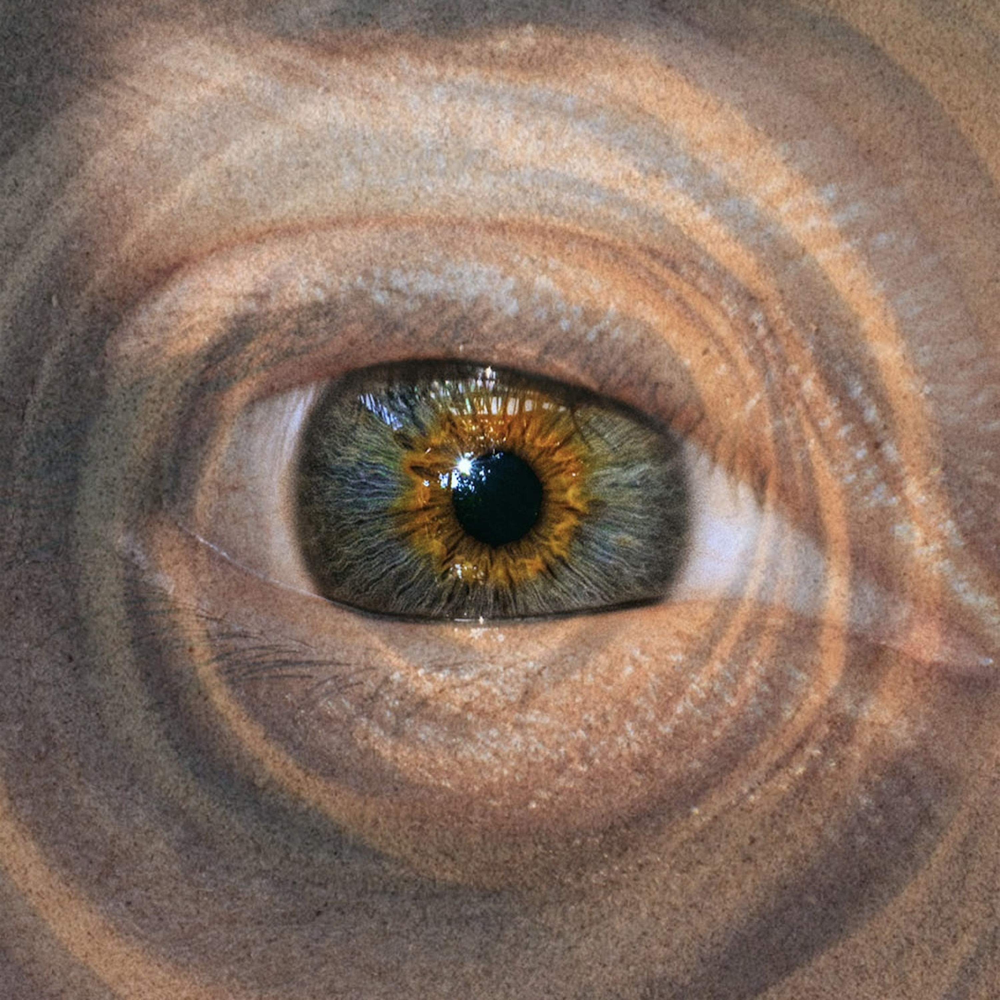

Hay cosas que repetimos incluso cuando sabemos que nos hacen daño.
La canción ya viene en camino.
pre-guardar CiclosSi me dejas tu número, te aviso personalmente cada vez que tenga un lanzamiento.
Tu número se usa solo para avisarte de nuevos lanzamientos. Puedes pedir dejar de recibirlos cuando quieras.